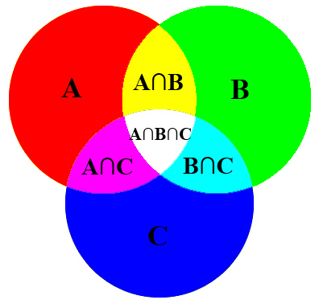

Code Sample: Python Set Types For Intelligent Manipulation of AWS Groups via Boto

A current project of mine is the development of the Ansible AWS IAM modules for Ansible. Part of the functionality is the creation of IAM resources such as users, groups and roles. In this post I want to talk about IAM groups assigned to a given user within AWS. As you are aware, Ansible strives to be as idempotent as possible by only acting upon given tasks only if necessary to achieve a desired state. Most modules follow this design pattern, others (like the raw module) can’t be expected to do so.
While developing the first part of the IAM module, I came across a small challenge. An Ansible user would call the IAM module like this:
iam: iam_type=user name=SomeGuy state=present groups=devs,ops,billing
This should be relatively straightforward to understand. The slight challenge was with groups. What would be the best way to check if the list of groups passed was actually the current set of groups presently assigned to the user and then how to remediate any discrepancies?
My initial solution was very brute, simply remove the user from ALL groups then add each group passed into the module via a loop. While aggressive, it worked. The problem was that by going about it this way, it was inefficient and made it hard to really place any logic into the module for detecting true change (or lack thereof).
The solution was Set Types. Within my code, it looks like:
try: orig_users_groups = [og['group_name'] for og in iam.get_groups_for_user(name).list_groups_for_user_result.groups] remove_groups = [rg for rg in frozenset(orig_users_groups).difference(groups)] new_groups = [ng for ng in frozenset(groups).difference(orig_users_groups)] except boto.exception.BotoServerError, err: module.fail_json(changed=changed, msg=str(err)) else: if len(orig_users_groups) > 0: for new in new_groups: iam.add_user_to_group(new, name) for rm in remove_groups: iam.remove_user_from_group(rm, name)
In the above, ‘groups’ represents the list of groups passed in as an argument to the module which declares which groups the user should belong to.
Step by step, this is what happens:
- Create a list of all the groups the given user is currently in
- frozenset(groups).difference(orig_users_groups) to get all the groups the user belongs to but shouldn’t belong to because they were not passed in to the groups argument.
- The inverse of that is done to get all the groups the user is not a part off but are included in the list of groups passed into the module.
- Then it takes into account whether or not the user was part of a group to begin with, and if so, then it adds and removes the proper groups….gracefully.
And that’s it! If you’d like to see the entirety of that code, it is available here.